EducAItors puts an AI validation gate between a student clicking submit and an instructor ever seeing the work. I led the six-designer team that designed the student side of that gate, in four weeks, against weekly founder demos.
CLIENT
EducAItors. AI-assisted academic evaluation for professional programs, India and US
MY ROLE
Design Lead, Student Module. Strategy, scope, founder communication, final delivery
TIMELINE
4-week sprint, 27 Mar to 26 Apr 2026, with weekly Saturday demos
AI CHECKS · BEFORE SUBMITINSTRUCTOR DECIDES · AFTER
01 · THE STAKES
When a machine checks your work before your professor does, every screen is a contract.
The platform scores against a rubric under one hard rule: No Evidence = No Credit. If the system can’t read a page, that page earns nothing. The instructor keeps final authority on every grade.
The student module is the first and most frequent touchpoint. If it feels cold or punishing, students assume the whole platform is. My job was to make the gate feel like guidance without weakening it.
Three business problems. Every design decision had to move at least one of them.
INSTRUCTOR TIMEBroken submissions land on faculty desks.Every dead Drive link, unreadable scan or missing artifact that reaches an instructor is triage work the platform promised to remove. Instructor time saved is the renewal metric.
DISPUTE LIABILITYCorrect grades that feel unfair get disputed.A student who loses marks on a scan-quality issue they never understood will contest the grade. Without a logged record of what they were warned about, the institution has no defence.
STUDENT TRUSTAI grading is already feared.In Indian higher education, grades decide careers and word of mouth decides adoption. If the platform reads as “a machine grades me with no human in the loop,” it loses.
02 · THE REAL PROBLEM
Students weren’t failing their work. They were failing a model of submission nobody had shown them.
Most platforms treat this as an error-message problem and fix it after the fact. I treated it as a mental model problem that had to be solved before upload.
WHAT STUDENTS BELIEVE
Upload→Submit→Done
WHAT THE SYSTEM REQUIRES
Complete→Accessible→Evaluable→Graded
The distance between these two models is where marks get lost for reasons that have nothing to do with the work.
Four user problems, each breaking the flow at a different moment:
UP1 · AWARENESS“Submission-ready” is never defined.Gaps surface only after the system rejects the work, usually near the deadline.
UP2 · FORMAT & OCRThe work exists but can’t be read.Permission-locked links, low-quality scans and handwriting all leave the system with no evidence.
UP3 · INTERPRETATIONWarnings and blockers look alike.Anxious students abandon valid work. Rushed students click through risks they don’t understand.
UP4 · RECOVERYFixing means starting over.There’s no preserved work, no targeted fix and no deadline context, so momentum breaks under pressure.
03 · FRAMING THE WORK
Nine personas, because the average student doesn’t exist here.
The team’s instinct was to design for one canonical student. I pushed back. A first-generation, mobile-only student in a Tier 2 Indian college and an R1 US grad student who will audit the AI line by line are not points on a spectrum. Each is a separate constraint that has to be designed for.
9personas across India and the US, in 4 functional anchor groups
68problems scored through 6 prioritisation lenses (persona reach, business impact, effort vs impact, scope tier, journey stage, problem type)
11platforms audited, from Gradescope and Turnitin to Azure OCR and Amazon Textract
1phase chosen: pre-submission and validation, where the student, instructor and institution all get hurt at once
Personas grouped by the constraint they impose:
A · EMOTIONALRiya Sharma (high-anxiety MBA student), Sunita Devi (mobile-only, first-gen), Vikram Nair (upskilling professional).They forced reassurance, plain-language fixes and professional-register feedback into the design. Riya became the demo spine.
B · SPEED & INFRASTRUCTUREArjun Mehta (4G, last 15 minutes before the deadline), Marcus Webb (shared library computer, US).They forced session persistence, upload auto-resume and surgical recovery.
C · AUDITPriya Iyer (IIM competitive auditor), Jordan Lee (R1 grad, files formal disputes).They forced criterion-level transparency and an evidence trail students can self-serve.
D · INTEGRITYKaran Shah (games the system under pressure), Tyler Brooks (uses consent as a dispute tactic).They forced empathetic error states that still produce a non-repudiable audit trail.
Field input: TAs think in rubric criteria. Students don’t.
We surveyed teaching assistants on why students keep repeating the same mistakes after feedback. The top answer wasn’t effort. It was criteria coverage. TAs check every draft criterion by criterion; students rarely map their own work that way.
Most common mistakes after feedbackMENTIONS IN A MULTI-SELECT TA SURVEY
Not addressing all criteria4
Referencing or formatting3
Unreadable handwriting, poor scans2
Rushed, last-minute fixes2
Surface-level changes only2
Misinterpreting feedback1
That one insight shaped three things: the rubric tab in Assignment View, the criterion-level Analysis Report, and later the persistent completeness bars.
04 · PRINCIPLES
Four principles, and one rule that overrides all of them.
These were filters, not values on a wall. Every screen went through them in daily critique.
01Error prevention is the spine.Every screen before validation does work, so validation isn’t where students first learn what “complete” means.
02Surface minimalism.Under deadline, students react rather than scan. Hide whatever isn’t load-bearing for the decision on screen.
03Progressive disclosure.Outcome first, criterion detail on demand, audit trail on request. Riya and Jordan read the same screen at different depths.
04Contextual guidance.A blocked Drive link and a blurry scan get different fix flows. Generic help text is worse than none.
THE OVERRIDE RULEThe student never faces more than one decision at a time.If a screen asked them to weigh two things at once, we redesigned it.
05 · ARCHITECTURE
13 screens, and three paths that split at the validation gate.
I locked the workflow before any visual work started. That decision is why a mid-sprint scope change cost us screens, not the architecture.
01Login: institutional entry
02Dashboard: concurrent assignments, deadline urgency, feedback attempts left
03Notifications: one channel for deadline, result and grade-ready alerts
04Assignment View: three tabs (Brief, What to Submit, Grading Rubric)
05Onboarding: 8 steps that establish “AI checks, instructor decides”
06Getting Started: choose the single-document or multi-artifact model
07Submit: empty, post-upload and ready states
08Validating: calm forward motion, no progress-bar anxiety
09Analysis Report: ready, warning or blocker. The highest-stakes screen
10Reconsideration Window: a cooling-off pause before the submission locks
12Grade Receipt: criterion breakdown with the AI and instructor views side by side
13Raise a Dispute: structured and time-boxed, with the consent record attached
THE SCREENS IN THE PROTOTYPEPROTOTYPE
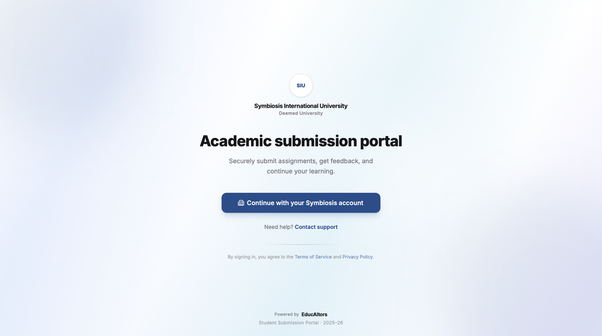
01Login. One institutional sign-in, with the university front and centre.02Dashboard. The overdue assignment leads, with feedback rounds remaining and a saved draft.
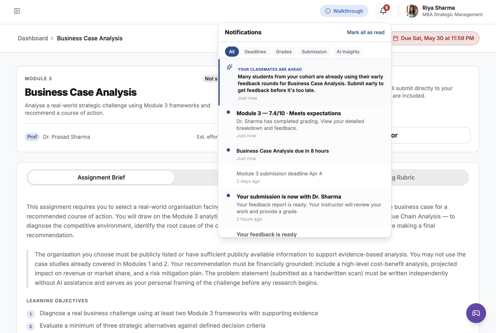
03Notifications, filtered by deadlines, grades, submission and AI insights.
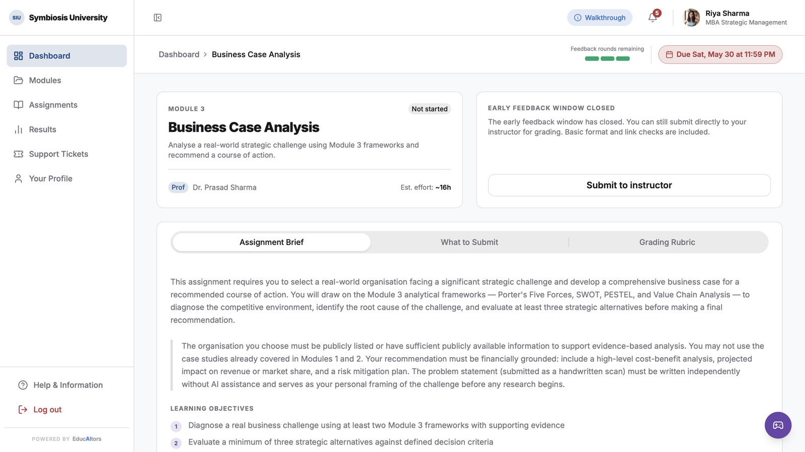
04Assignment View. Brief, What to Submit and Grading Rubric as three tabs.
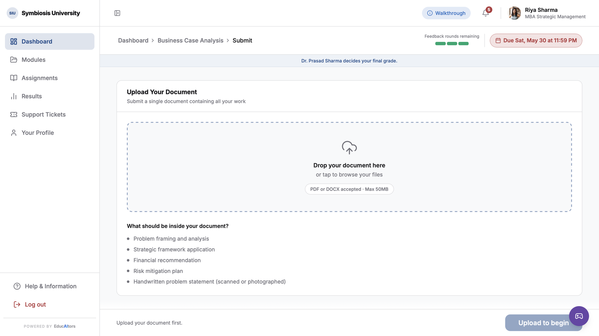
07Submit, empty state. The checklist of what belongs in the document sits under the drop zone.
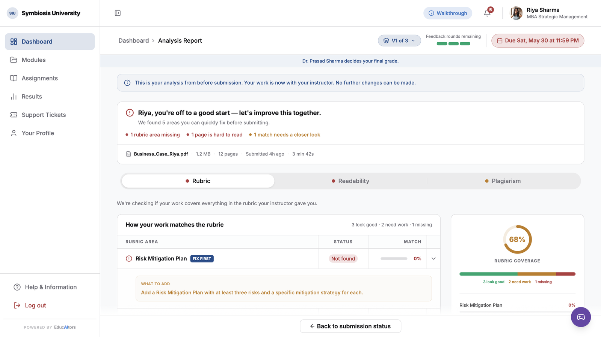
09Analysis Report. Outcome as a headline, then what to fix first.
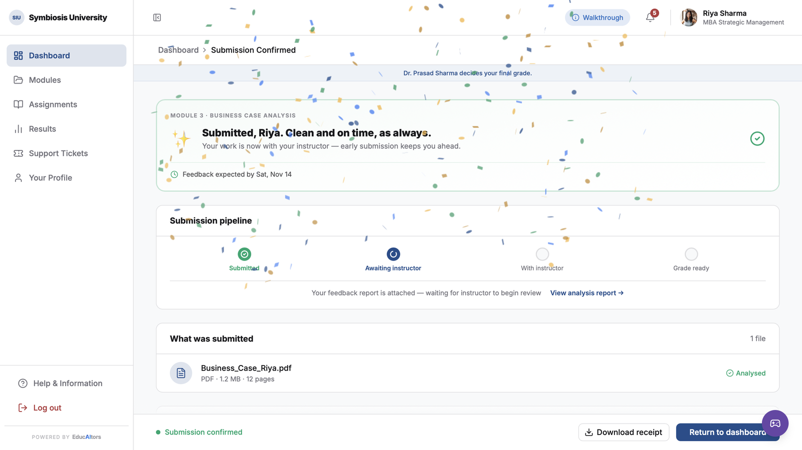
11Submission Confirmed, with the pipeline from submitted to grade ready.
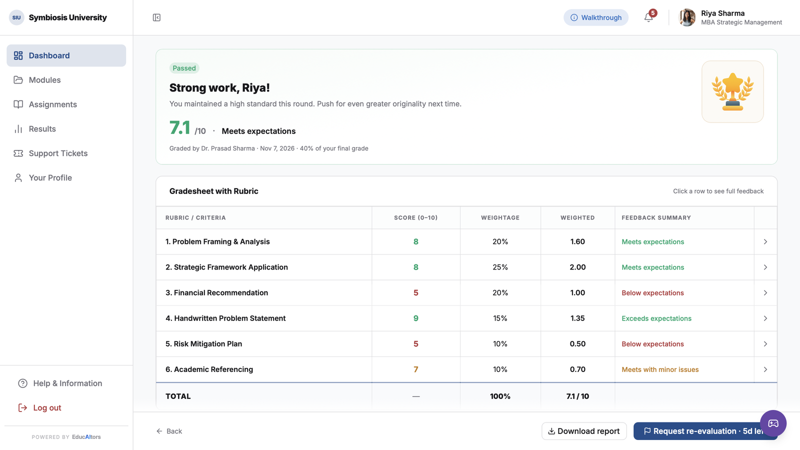
12Grade Receipt. Criterion scores, weightage and the instructor’s feedback summary.
Everything before screen 09 is shared. Everything after it depends on one of three outcomes:
Validation in three tiers, so compute cost became a design input.
T1 · INSTANTRuns on upload and checks format, size, page count, text extractability, handwriting and embedded links.
Under 100 ms, $0 AI cost.
T2 · REAL-TIMERuns while the student is on the Submit screen and checks whether links are reachable and permissioned, plus empty content.
1–3 seconds, about $0.0001 per submission.
T3 · DEFERREDRuns after the submit timestamp locks and does OCR, section-to-rubric mapping, completeness and the resubmission delta.
2–12 minutes, $0.008–$0.045 per submission.
These figures come from the team’s compute spec, modelled on April 2026 spot pricing. T1 and T2 catch what students can fix on the spot. A T3 failure never voids a submission.
VALIDATION ON THE SUBMIT SCREENPROTOTYPE
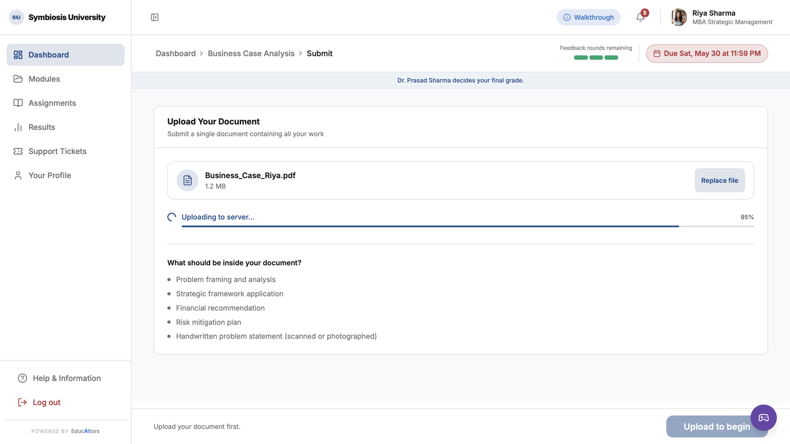
T1Upload in progress. The checks start the moment the file lands.
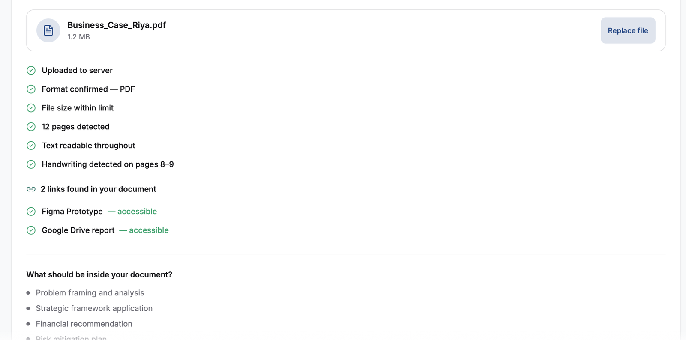
T1 · T2Format, size, pages, readability, handwriting and both links confirmed before the student leaves Submit.
06 · THE HARDEST DECISION
The dangerous state was the warning state, not the failure state.
A blocker tells you what to do. “Ready with warnings” asks a stressed student to make an informed trade-off at 11 pm. Two of my personas fail it in opposite directions.
RiyaREADS IT AS A BLOCKERShe abandons a valid submission and loses marks she never needed to lose.
ArjunREADS IT AS NOISEHe clicks through, a criterion scores zero, and he disputes a grade the system awarded correctly.
A generic “I understand” checkbox fails both of them and gives the institution nothing to stand on. So I specified the screen in a fixed order of visual priority:
1State the outcome as a headline, not a status pill in a corner.
2Name the affected criterion and its consequence in plain language: “Page 4 may not be readable, so Criterion 3 may get no evidence credit,” not “OCR confidence below threshold.”
3Give exactly two actions, with the button text carrying the commitment: “Re-upload a clearer page 4” or “Submit anyway. I accept Criterion 3 may score zero.”
4Route “submit anyway” through criterion-by-criterion consent, logged and timestamped server-side, then through a reconsideration window before the submission locks.
THE ANALYSIS REPORTPROTOTYPE
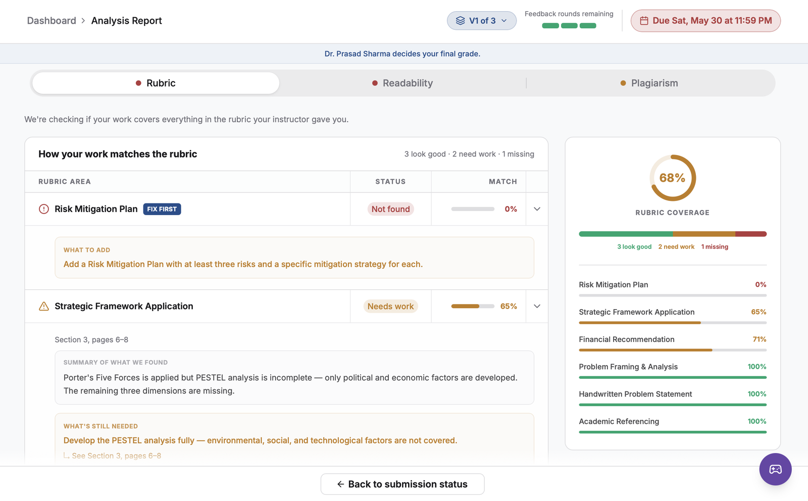
RUBRICThe missing criterion is tagged FIX FIRST, with exactly what to add.
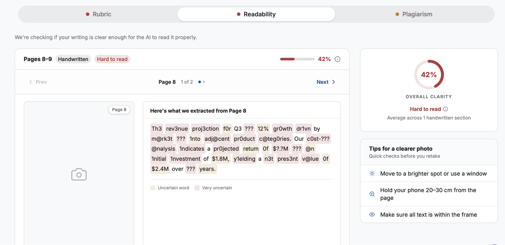
READABILITYHandwritten pages 8–9 shown as the system read them, with tips for a clearer photo.
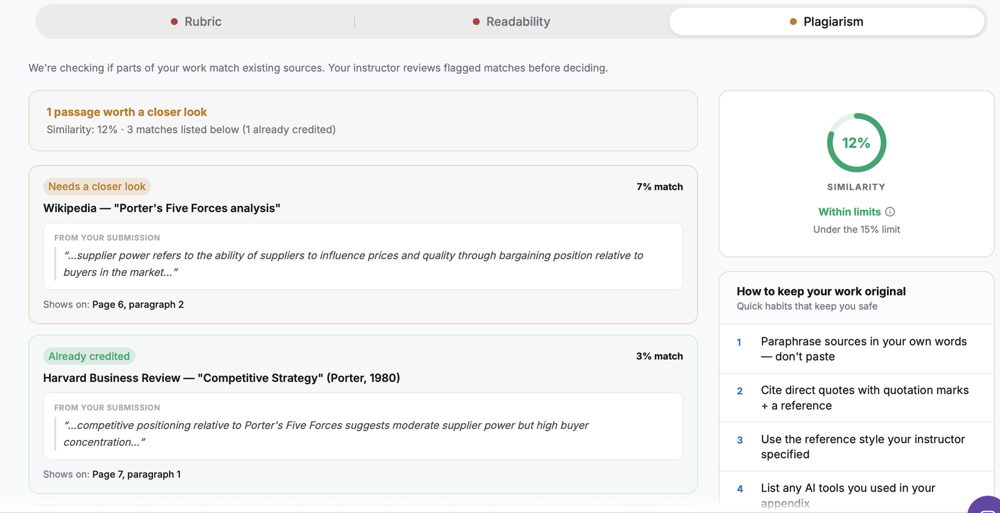
PLAGIARISMMatches are sorted into “needs a closer look” and “already credited”, against the 15% limit.
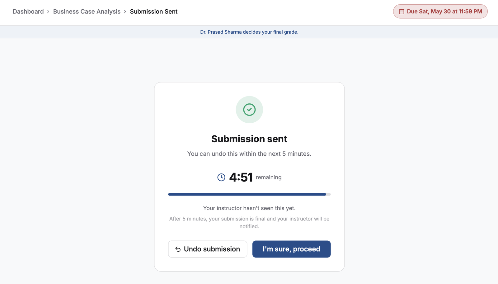
RECONSIDERATION WINDOWSubmission sent, with a 5-minute undo before the instructor is notified.
07 · COURSE CORRECTION 01 · WEEK 1 DEMO
The founder told us we’d optimised for the wrong customer.
I ran the first demo as Riya’s journey, then broke it with Marcus, Arjun and Karan. A feature tour gets polite nods. A persona arc gets redirection, and we got three.
“Student load went down. Faculty load might go up.”
WHAT IT MEANTThe buyer is the institution, and it buys on faculty time. Five artifacts per student is five things to open.
WHAT I CHANGEDI added a single-document model next to multi-artifact. T1 detects links, handwriting and images inside one PDF, and the instructor defines the submission shape before submissions open.
“Real-time AI on every check will bankrupt you.”
WHAT IT MEANTCompute cost is a product constraint, not an engineering footnote.
WHAT I CHANGEDI split validation into T1/T2 real-time and T3 deferred. The Validating screen tells students when results will arrive instead of making them watch a spinner.
“Pre-submission needs incentives.”
WHAT IT MEANTEarly submission is what makes the AI feedback loop valuable.
WHAT I CHANGEDI tied analysis depth to timing. Early submitters get full rubric analysis on cheap batch compute. Final-hour submitters get the lighter format and completeness pass, since they don’t have time to act on more.
Roughly a third of the first prototype was invalidated. The four principles held, so we changed surfaces, not philosophy.
The alignment I’m proudest of: the cost model and the UX incentive point the same way. Submitting early gets the student richer feedback and costs the platform less.30–50%Projected compute saving on late submissions
08 · COURSE CORRECTION 02 · WEEK 3 DEMO
One word on the report was a legal liability.
“Improve your grade” appeared across our submit and report screens. The founder flagged it twice: the platform cannot promise a grade outcome. My mentor added that an up-arrow next to “improved” implies the same promise.
BEFOREFix these issues to improve your grade ↑Your draft improved
AFTER5 items flagged · 5 items fixedCriterion 3 now has readable evidence
Grade-outcome language was removed from every student-facing surface. That was a red-line decision from the demo. Three more reframes came out of the same session:
01AI checks compliance. Instructors judge quality.A client stakeholder pushed for this distinction to be explicit. It became the line under every AI surface, and it made the trust story easy to say in one sentence.
02Disclaimers get ignored.“Your instructor decides your final grade” as a footnote reads like the warning on a gambling ad. We moved it out of the boilerplate and into moments students actually register: onboarding, the report and the receipt.
03Free re-evaluation doesn’t scale.One free request per student across a class of 100 is real instructor load. We took options to the next demo, including a review-loss model like cricket’s DRS.
WHERE THE DECISIONS LANDEDPROTOTYPE
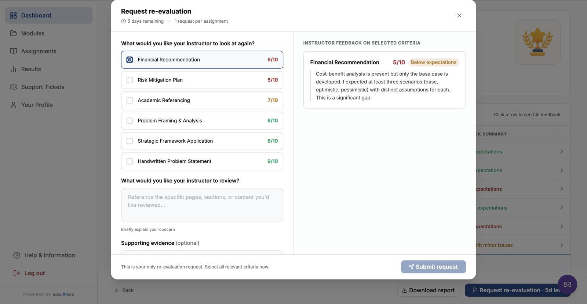
RE-EVALUATIONOne request per assignment, time-boxed, with the instructor’s feedback shown next to each criterion.
09 · BEHAVIOURAL TIERING
Tier students by behaviour, never by grade, and never show the bottom tier its label.
Grades measure outcome. Behaviour measures pattern. A student at 65 with strong engagement is a better signal than one at 85 who rush-submits every time.
The composite score runs on four axes: Readiness, Autonomy, Iteration Quality and Engagement Depth. Each tier maps to a Self-Determination Theory motivation model. We used three tiers, not five: three is legible, five is a spreadsheet.
EstablishedEST. 15–20% OF STUDENTSAdditive unlocks such as stretch criteria, top-percentile samples and trajectory views. More density, same product.
BuildingEST. 55–65%Coaching tuned to the student’s weakest axis, with “Last time you lost marks on…” reminders. This is the tier that proves the adaptive logic works.
EmergingEST. 15–25%No tier label, no comparative data, one plain-language fix at a time. Asymmetric disclosure protects these students from labelling harm.
The tiers are additive, not segregated. The shares are planning estimates from the tiering framework, not measured data.
THE DEMO CALLI made the Building tier the spine of the final demo, with Established features shown as unlocks and Emerging as a 90-second contrast. That meant about 18 screens instead of 39, with no loss in narrative coverage.
SAME LAYOUT, DIFFERENT VOICEPROTOTYPE
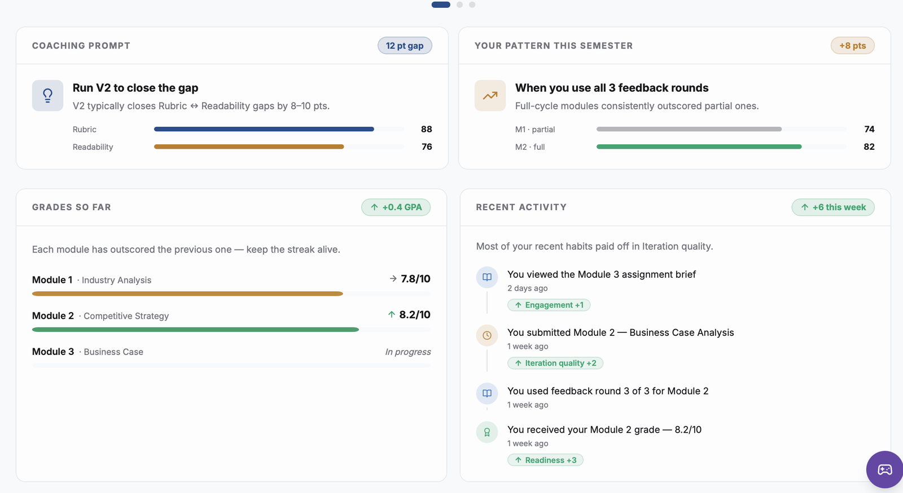
BUILDINGCoaching prompt and pattern this semester for a student who is climbing.
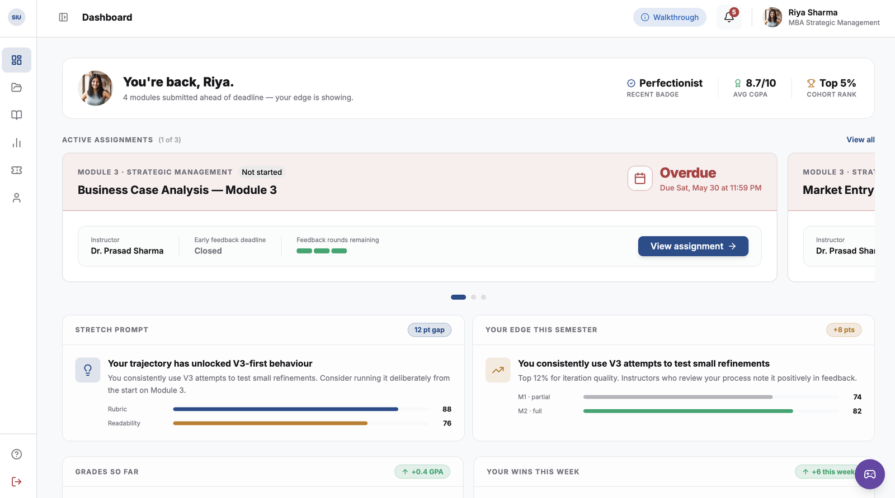
ESTABLISHEDThe same dashboard as a stretch prompt for a top-5% student.
ONE PROFILE PAGE, FOUR STUDENTSPROTOTYPE
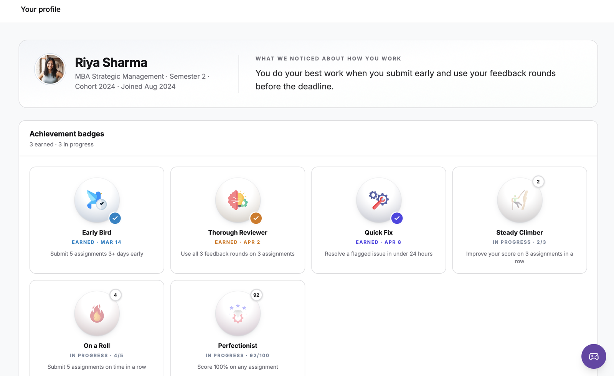
STRONG PERFORMERSubmits early and uses feedback rounds.
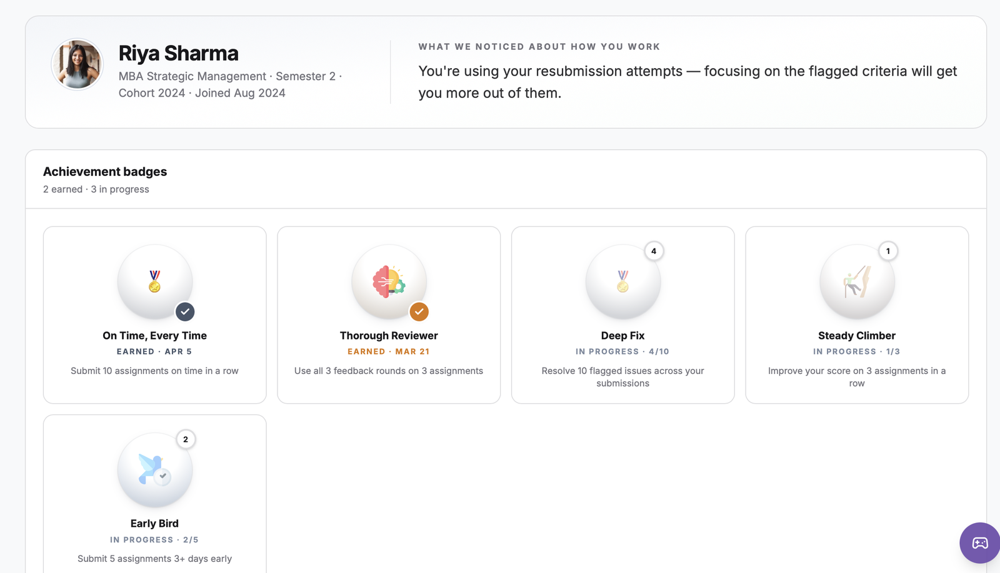
COSMETIC RESUBMITTERUses every attempt, changes little between them.
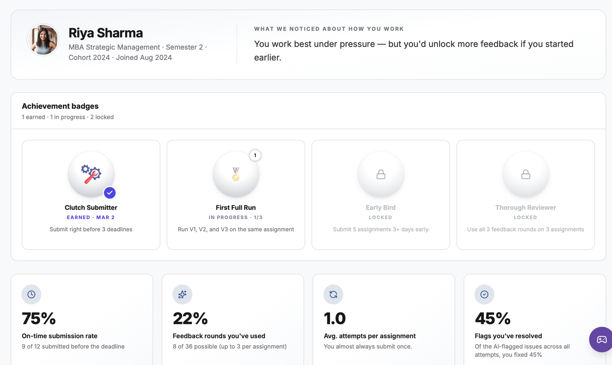
LATE SUBMITTERHalf of submissions land in the last hour.
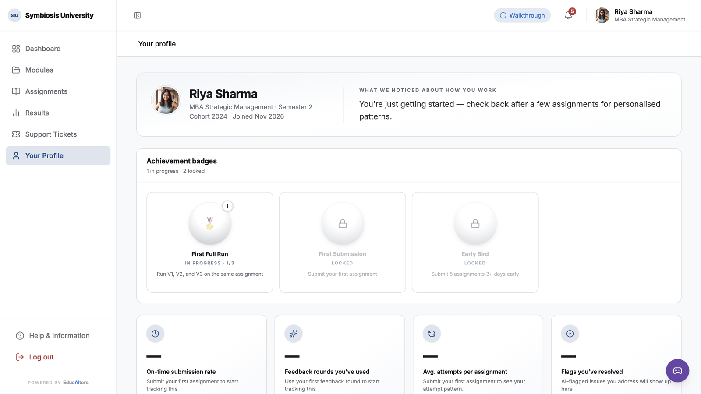
NEW STUDENTNo label and no data yet, only what to do first.
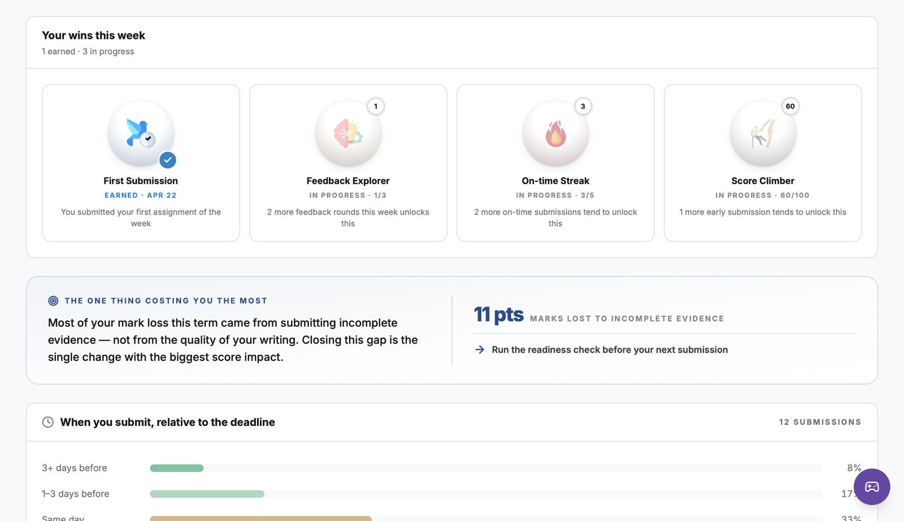
BUILDING TIERThe one thing costing the most marks, stated as a single fix.
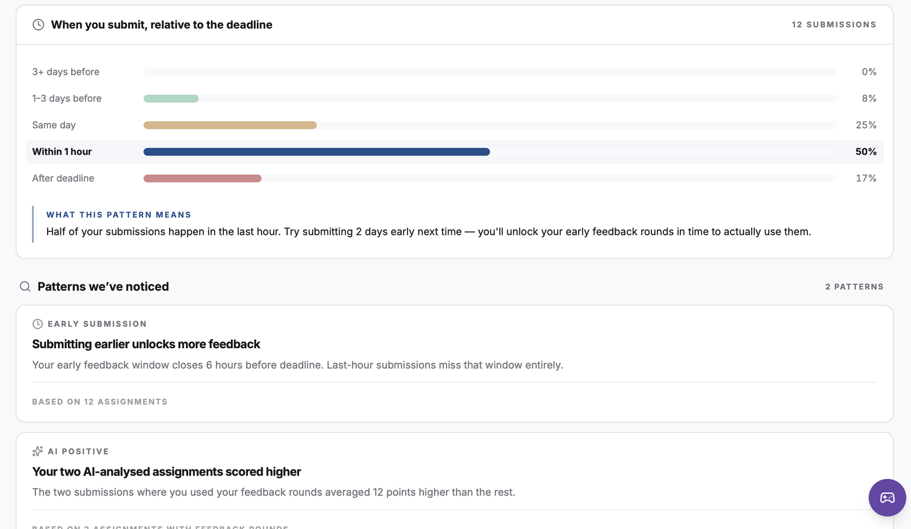
LATE SUBMITTERSubmission timing against the deadline, with what the pattern means.
10 · RUNNING THE TEAM
How six designers shipped four weeks of work without losing a week.
01Strands, not consensus.Primary owners were set in week one. When we flattened ownership in week two to absorb the single-document scope, we lost a day to context switching. I restored the strands and the pace came back.
02Daily critique, not weekly.We ran a short critique after every screen iteration. A weekly review would have produced two big rework cycles. Daily critique produced around fifteen small ones that compounded.
03Persona arcs, not feature tours.The founder got a character to push back on rather than a screen to nitpick. That’s why his feedback came as redirection instead of acknowledgement.
04Decision matrices, not open questions.Architecture calls only the founder could make went to him as options, with the design risk of each spelled out. Open questions get deferred. Matrices get decided.
TARGET100%of warning-state submissions with a logged consent record
TARGET80%+resubmission completion rate
These targets were set in the design brief. The product is pre-launch, so none of them are measured results.
12 · WHAT I’D DO DIFFERENTLY
Read the buyer’s metric as a design constraint from day one.
The brief listed instructor time saved as a business metric, and I treated it as a measurement. It was really a constraint, and missing that cost us a third of the week-one prototype. When a founder talks about who pays, that’s design input.
Next:
01Put the consent screen in front of a real anxious student at 11:47 pm. It’s the highest-stakes interaction and the least tested.
02Observe first-generation students in Tier 2 and Tier 3 institutions. Our personas are research-grounded, but they’re still proxies.
03Resolve the three architecture-dependent opportunities: pre-submission validation preview, server-side consent storage, and preserved state on resubmission.
04Write the cross-team interface contract first. The grade-release moment sat between two teams and belonged to neither.